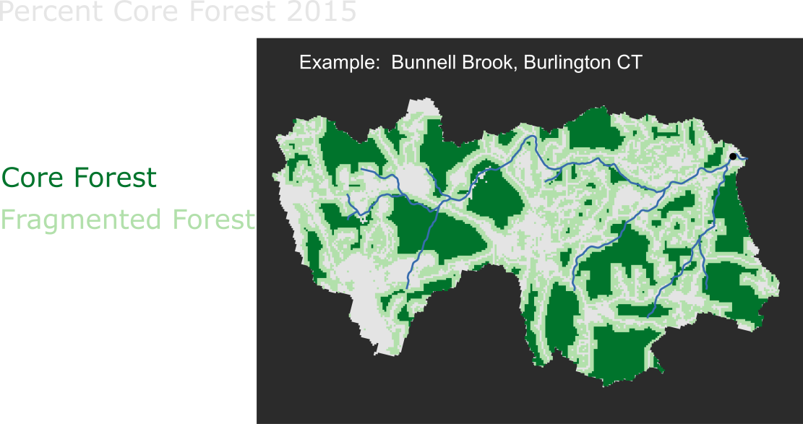
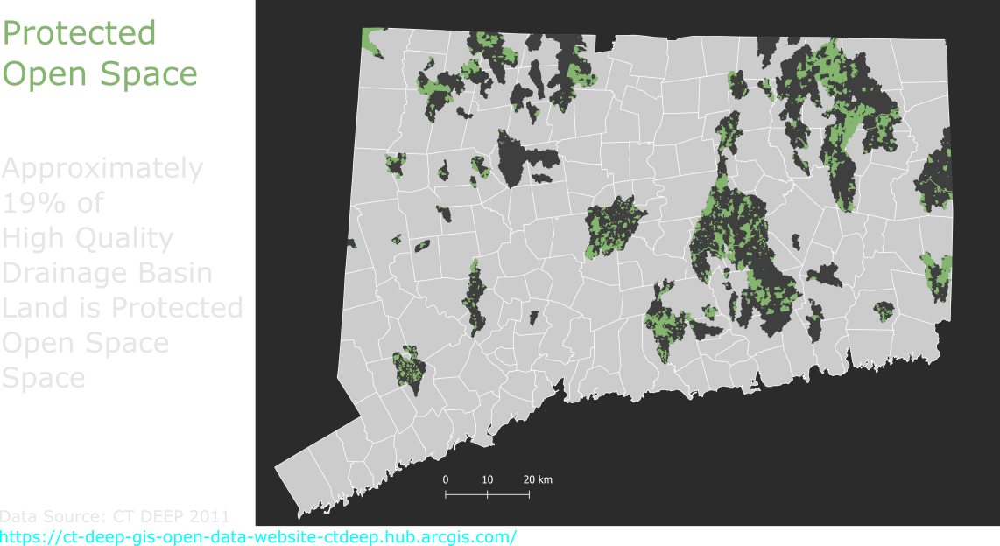

Sandy Brook, Colebrook CT
Biological Condition Gradient (BCG)
 Biological Condition Gradient Assessments
Biological Condition Gradient Assessments
Macroinvertebrate BCG Model
 Long-Term Macroinvertebrate Sampling Sites
Long-Term Macroinvertebrate Sampling Sites
Multi-Year Macroinvertebrate Sites 1989-2019
 Example - Difference in Relative Abundance (RA) Across All Sample Combinations
Example - Difference in Relative Abundance (RA) Across All Sample Combinations
Difference in Relative Abundance of Sensitive
, Moderate and
Tolerant Taxa
Year 1 - Most recent Year in Combo
Year 2 - Second Year in Combo
Year 1 RA - Year 2 RA = Difference (Diff)
Example - Natchaug River. Sample Years 1994,2005,2014. Relative Abundance Sensitive Taxa.
| Year 1 |
Year 2 |
Diff (Yrs) |
RA Yr 1 |
RA Yr 2 |
Diff (RA) |
| 2014 |
1994 |
20 |
0.37 |
0.53 |
-0.16 |
| 2014 |
2005 |
9 |
0.37 |
0.35 |
0.02 |
| 2005 |
1994 |
11 |
0.35 |
0.53 |
-0.18 |
Multi-Year BCG Tier 5 Sites
 Multi-Year BCG Tier 2 Sites
Multi-Year BCG Tier 2 Sites
 Landscape Changes at BCG Tier 2 Sites
Landscape Changes at BCG Tier 2 Sites
Landscape Changes at BCG Tier 2 Sites
Landscape Changes at BCG Tier 2 Sites
Landscape Changes at BCG Tier 2 Sites



Environmental Condition Changes at BCG Tier 2 Sites
Protected Open Space in BCG Tier 2 Watersheds

Wild Brook Trout Populations (BCG 1 & 2)
Eltz & Beauchene, 2020
Proposed Analysis - Calculate BCG Assignments for Biological Samples and Associate with Catchments
Proposed Analysis - Identify High Quality Drainage Basins Using the BCG Assigned Biological Samples
Proposed Analysis - Characterize Temporally and Spatially Specific Drainage Basin Environments Across BCG Levels Bio Samples
Proposed Model - Predict High Quality Drainage Basin Catchments
Proposed Mapping Application - HQ Vulnerability
 Acknowledgements
Acknowledgements
 References
References
Bellucci, C.J., Becker, M., Beauchene, M. 2011. Characteristics of macroinvertebrate
and fish communities from 30 least disturbed small streams in Connecticut.
Northeastern Naturalist 18:411-444
Davies, S.P., and S.K. Jackson. 2006. The Biological Condition Gradient:
A descriptive model for interpreting change in aquatic ecosystems.
Ecological Applications 16:1251–1266.
Eltz, B., and M. Beauchene. 2020. A random revisit of the Statewide stream survey
project: A focus on Wild Brook Trout. CT DEEP, Bureau of Natural Resources. Hartford, CT.
Gerritsen J, Jessup B. 2007. Calibration of the
biological condition gradient for high gradient streams of Connecticut.
Report prepared for US EPA Office of Science and Technology and
the Connecticut Department of Environmental Protection. TetraTech, Maryland
Stoddard J.L., Van Sickle J., Herlihy A.T., Brahney J., Paulsen S., Peck D. V., et al. 2016.
Continental-Scale Increase in Lake and Stream Phosphorus: Are Oligotrophic Systems
Disappearing in the United States? Environmental Science and Technology 50, 3409–3415.
USEPA. 2016. A Practitioner’s Guide to the
Biological Condition Gradient:A Framework to Describe Incremental Change in
Aquatic Ecosystems. EPA-842-R-16-001. U.S.Environmental Protection Agency,
Washington, DC.
US EPA Healthy Watershed Protection Website
FOSS Technology Stack
 Questions / Comments
Questions / Comments
 Geography Department Digital Mapping Program &
Geography Department Digital Mapping Program &
 Monitoring and Assessment Program
Monitoring and Assessment Program